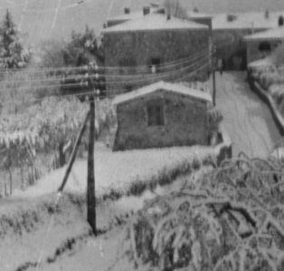

Quercegrossa (Ricordi e memorie)
CAPITOLO XI - COSE D'ALTRI TEMPI
Torna all'Indice Cose d'altri tempi
Vai all'Indice dei Capitoli
Servizi
(L'Acqua)
(Illuminazione)
(La Posta)
(Il Telefono)
(La Strada)
(Trasporti pubblici)
(Mezzi privati)
(Botteghe)
Il Telefono
Nel 1898 c'erano in Italia già 16.000 abbonati a vent'anni dai primi esperimenti italiani.
Ma per molto tempo ancora il telefono rimase un servizio riservato a pochi e solo dopo la Prima guerra mondiale iniziò un timido diffondersi degli apparecchi che nel 1925 assommavano a 130.000. Nei successivi quindici anni si assistette a un discreto aumento degli utenti: nel 1940 esistevano in Italia 500.000 telefoni tra privati e pubblici che arrivarono a un milione nel 1950. Queste cifre potrebbero far pensare ad un notevole sviluppo della telefonia, ma invece l’Italia rimaneva costantemente all'ultimo posto tra le nazioni più avanzate. In quegli anni e nei precedenti al conflitto mondiale era uso comune telefonare dalle cabine telefoniche nelle città o da un posto pubblico nei paesi, quando c'era. In caso contrario si ricorreva ai privati che di solito non mancavano anche nelle campagne, soprattutto nelle grandi fattorie. Inutile dire a questo punto, visto il ritardo con il quale arrivarono tutti i maggiori servizi nella nostra frazione, che a Quercegrossa anche il telefono non fece eccezione e si dovette attendere il 1950 per avere il posto pubblico telefonico. Prima della Seconda guerra mondiale e immediatamente dopo, nei casi urgenti si inforcava la bicicletta e si correva al punto telefonico più vicino che era la fattoria del Castagno, poco dopo il Colombaio, oppure alla fattoria della Muraglia alle Badesse. Quando Alfio Marchetti rimase vittima dell'incidente sul carro, uno dei presenti partì a tutta velocità per il Castagno e da lì chiamarono l'ambulanza che giunse all'Arginano dopo un'ora. Prima del 1950 in una calda giornata di luglio, il 24 per la festa di S. Giacomo, andò a fuoco il pagliaio del Losi. Qualcuno corse subito verso il Castagno per chiamare i vigili del fuoco che a quel tempo avevano la caserma alle Logge del Papa. Ma intervennero in ritardo e inutilmente: l'incendio aveva già divorato il pagliaio.
Il cavo telefonico
Si era già parlato di telefono negli anni Venti, ma si trattò soltanto del cavo telefonico che tra il 1925 e il 1930 l'Azienda di Stato per i servizi telefonici stese per la costruzione della linea Firenze-Roma. I lavori vennero affidati alla società SIRTI che realizzò il tronco Siena-Firenze tra il 1926 e il 1928. Passando dal Passo dei Pecorai il cavo raggiungeva Castellina in Chianti e da qui Quercegrossa per Siena. Tra Ricceri e Fontebecci seguiva perfettamente il tracciato della Strada Statale 222 con una leggera deviazione a Quercegrossa. Prima della salita verso Quercia, dai piani del Mulino tagliava per la "Stradaccia" e si ricollegava alla statale al di sopra della curva dei colonnini. Fu un'opera importante e numerosi gli operai delle zone interessate che vi lavorarono: uno di questi fu Adriano Socci allora residente a S. Leonino. Passò il cavo, ma il telefono non si vide.

Il telegrafo
Un'altra linea che passava da Quercegrossa era quella del telegrafo. In questa foto del 1920 ca. si vedono gli alti pali di legno che portano una decina di fili. Dalla colonna dopo la capanna si osserva la linea che attraversa la strada, sorretta da quella successiva posta in piazza, collocata sui muri di Casagrande per poi continuare nella Stradaccia. Nessuna data di riferimento sulla sua installazione: probabilmente tra il 1870 e il 1880. Nel 1944 col passaggio del fronte e i conseguenti cannoneggiamenti tutti i fili caddero per terra. Riattivata subito dopo, la linea telegrafica funzionò ancora negli anni Cinquanta per essere poi demolita. Ne era passato del tempo dalla prima linea telegrafica italiana che nel 1847 collegava Livorno a Pisa.
Da questo ingrandimento del 1920 ca. appare chiaramente la linea telegrafica che attraversava Quercegrossa.
Il telefono a Quercia
Il 1950 fu l'anno della svolta. La linea telefonica sollecitata da tutti arrivò anche a Quercegrossa proveniente da Monteriggioni. Si era formata anche una commissione facente capo ad Alizzardo Corbini e Gino Pagni e, come risulta dalla “Nota di impegno e versamento per la costruzione della linea telefonica di Quercegrossa”, venne aperta una sottoscrizione per contribuire all’installazione dell’apparecchio; di questa ci sono rimasti i nomi di alcune famiglie contribuenti al finanziamento dell’opera. Un elenco certamente incompleto:
Famiglia Corbini L. 800 / Pagni L. 1.000 / Pistolesi L. 500 / Starnini L. 500 / Losi L. 500 / Mecacci L. 1000 / Giannini L. 500/ Bernardeschi n.q. / Vettori L. 500 / Stazzoni L. 1000 / Nocciarelli L. 500 / Palazzi L. 500.
Si trattava ora di scegliere il luogo dove sistemare l'apparecchio e trovare chi gestisse il posto pubblico. Tre erano i possibili candidati: la Bottega del Brogi, la nuova Cooperativa del Barucci e l'Appalto del Buti. La sua naturale collocazione, come avvenne in quasi tutti i paesi, sarebbe stato l'Appalto, considerato più idoneo a un servizio pubblico, vestendo una forma di ufficialità che gli derivava dal distribuire i prodotti dei Monopoli e dello Stato. Ma a questo punto entrarono in ballo le forze politiche che in quegli anni si scontravano su tutto. Il sospetto che il nuovo servizio potesse portare dei vantaggi politici e di propaganda fece scendere in campo le forze della sinistra che chiesero di installare il servizio nella Cooperativa di Consumo del Barucci, mentre i democristiani insistevano per l'Appalto del Buti. Il timore dei comunisti era che una volta messo il telefono in casa Buti, famiglia notoriamente democristiana, diventasse di uso troppo personale per la famiglia e per gli "amici" e si trasformasse in uno strumento politico con notevole vantaggio alla parte avversa. Viceversa, per i democristiani, il telefono nella Cooperativa sarebbe stato come metterlo nella sezione del P.C.I. Questa vicenda ci aiuta a comprendere che livelli avesse raggiunto la contesa politica nel dopoguerra. Furono giorni di discussioni e di incontri e, come avviene spesso, si arrivò al compromesso. Si accettò il telefono all'Appalto, ma con l'accordo che fosse installato nella bottega, escludendo le tre stanze di abitazione. Il solenne impegno venne sottoscritto il 9 dicembre 1950 dalla proprietaria dei locali dell'Appalto Dina Mori e controfirmato dai rappresentanti della sinistra Silvio Cappelletti e Ferdinando Mecacci. E' un semplice documento, ma merita di essere conosciuto, perlomeno per la sua singolarità.
Il foglio di compromesso che autorizzava l’installazione del telefono nell’appalto controfirmato da Silvio Cappelletti e Ferdinando Mecacci.
Dal 1951 quindi, il telefono cominciò a funzionare nel Posto pubblico di Quercegrossa e servì indistintamente tutta la popolazione nel rispetto delle regole e degli orari. I timori espressi si rivelarono infondati. Da allora il posto pubblico seguì gli spostamenti dell'Appalto fino ai giorni nostri.
L’apparecchio era stato sistemato in un angolo della stanza di sinistra, quella del biliardo, all'interno di una bella cabina di legno lucido con una pesante porta con vetro che isolava dall'esterno. Non essendoci ancora la teleselezione, le telefonate fuori settore avvenivano tutte tramite centralino e di conseguenza dovevi prenotare la chiamata e attendere. Aspettavi qualche minuto, quando andava bene, poi entravi in cabina e comunicavi. Se la telefonata si prolungava interveniva la sor Ada, sempre vigile, che ti diceva: "Ora basta eh!". Nei casi in cui ricevevi una telefonata da fuori venivi avvertito a casa, raggiungevi l'Appalto e aspettavi che richiamassero.
Entrare in quella cabina era per noi ragazzi quasi impossibile. Quelle rare volte che capitava "per farti sentire il telefono" ti mettevano la cornetta all'orecchio e avvertivi un bip - bip flebile, lontano, che unito all'emozione e al profumo particolare della cabina dava sensazione di mistero.
Nel 1969/70, con il completamento della rete nazionale di teleselezione in Italia, fu consentito con il numero di prefisso raggiungere ogni parte d'Italia. Ma il vero progresso fu l'installazione della centrale automatica a Quercegrossa con 50 numeri a disposizione delle famiglie e, a seguito della richiesta fatta il 31 maggio 1969, alla fine dello stesso anno i primi squilli risuonarono nelle case del nostro paese. Il prefisso 0577 venne seguito dal 328000 fino al 328050.
Il telefono, l'acqua e altre migliorie di quella fine decennio stavano veramente scavando un profondo solco col passato che, per naturale reazione, tutti avrebbero ben presto dimenticato, travolti dalle frenesie del progresso.
Inizio pagina
Indice Cose d'altri tempi
Vai all'Indice dei Capitoli
|